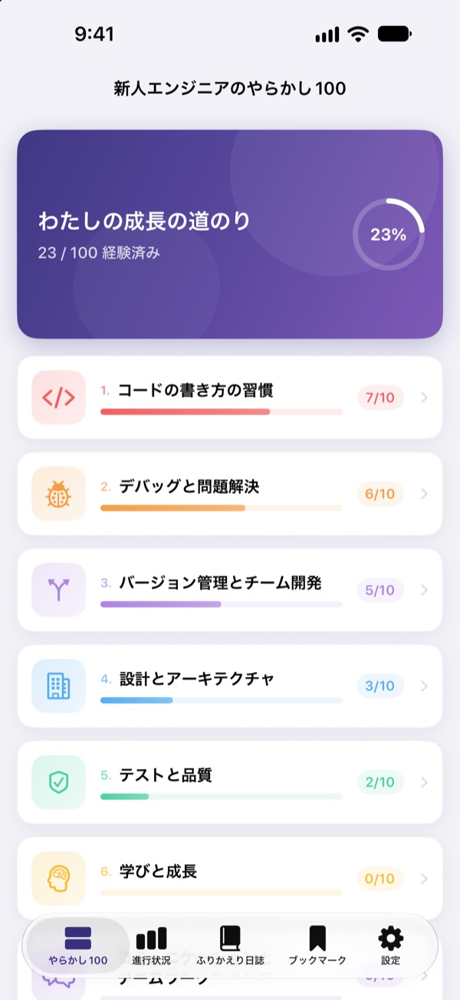
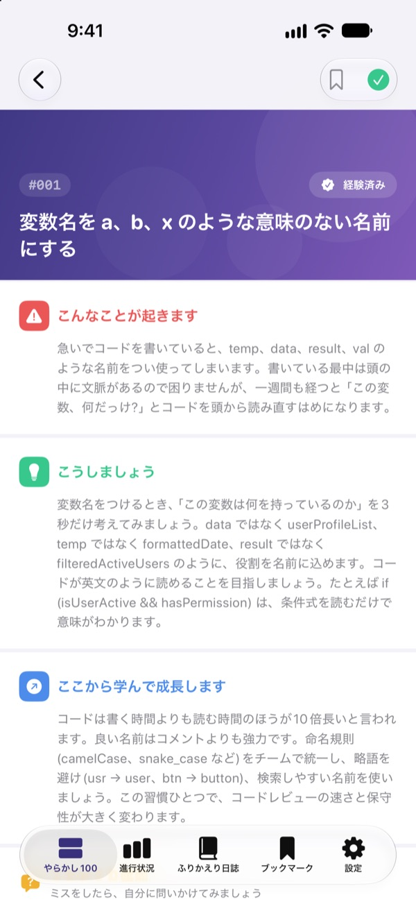
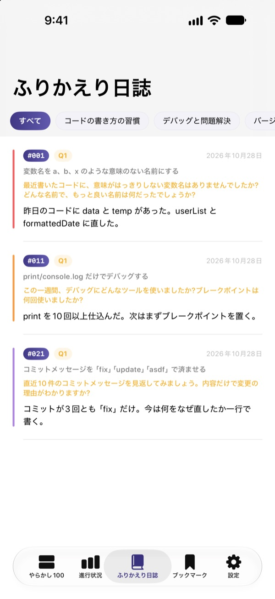
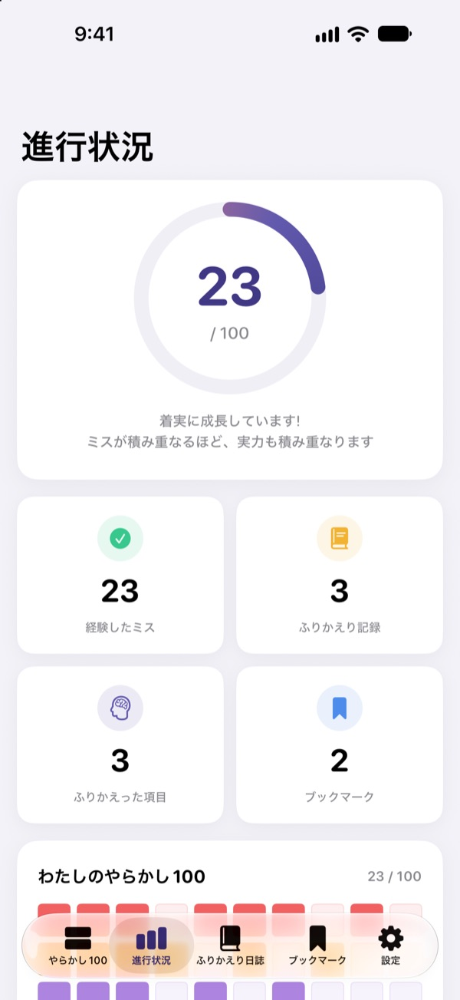

痛い目を見る前に、
先に知っておく
新人エンジニアがよくやる失敗を100個集めました。失敗ごとに、どんな状況になるか、どうすればいいか、何を学べるかを読んで、ふりかえりの質問に答えれば、同じ失敗を二度としなくなります。
最初の30個は無料です。iPhone、iPad、Macで使えます。

失敗をひとつ開いてみましょう
無料で読める最初の分野の失敗10個です。文章はアプリと同じです。経験したことがあるものは「経験済み」でチェックしてみてください。
コードレビューで、また同じ指摘を受けていませんか？
意味のない変数名、長すぎる関数、コピペしたコード。先輩たちはみんな一度は通った道なのに、自分は実際にぶつかるまで気づけません。やらかし100はその失敗を先に見せて、自分の経験と照らし合わせてふりかえることで、同じ失敗を繰り返さないよう手助けします。
失敗ごとに、状況・対策・学び
失敗をひとつ開くと、こんな状況になる、こうすればいい、これを学んで成長する、の3つに分けて説明します。
コードの書き方の習慣からセキュリティ、パフォーマンスまで10分野。現場で何度も繰り返される失敗だけを選びました。

読んで終わりにしない、ふりかえりの質問
失敗ごとにふりかえりの質問が4つ、全部で400個あります。自分のプロジェクトを思い浮かべながら答えると、読んだ知識が自分の経験になります。
書いた回答はふりかえり日誌に分野別にまとまり、いつでも読み返せます。

どれだけ成長したか、ひと目で
経験した失敗をチェックすると、分野別と全体の進捗がたまっていきます。読み返したい失敗はブックマークしておきましょう。
記録はiCloudでiPhone、iPad、Macに同期されます。

始め方は3ステップ
- 1
分野を選ぶ
コードの書き方の習慣、デバッグと問題解決、バージョン管理とチーム開発は無料ですぐ読めます。
- 2
読んでチェックする
経験したことがある失敗は「経験済み」を押して記録します。
- 3
ふりかえりに答える
自分の経験を思い出して、短くても書いてみましょう。ふりかえり日誌にたまります。
扱う10の分野
- コードの書き方の習慣
- #001–#010 · 無料
- デバッグと問題解決
- #011–#020 · 無料
- バージョン管理とチーム開発
- #021–#030 · 無料
- 設計とアーキテクチャ
- #031–#040 · PRO
- テストと品質
- #041–#050 · PRO
- 学びと成長
- #051–#060 · PRO
- コミュニケーションとチームワーク
- #061–#070 · PRO
- デプロイと運用
- #071–#080 · PRO
- セキュリティとデータ
- #081–#090 · PRO
- パフォーマンスと最適化
- #091–#100 · PRO
各分野に失敗が10個、各失敗にふりかえりの質問が4つあります。
30個は無料、100個すべてはPROで
無料
- 最初の3分野、失敗30個
- その失敗のふりかえりの質問120個
- 経験チェック、ふりかえり日誌、進捗、ブックマーク
- iCloud同期（iPhone、iPad、Mac）
やらかし100 PRO
- 残り7分野、失敗70個（#031〜#100）
- ふりかえりの質問280個を追加
- 今後のコンテンツアップデートすべて
月額、年額（月額より最大50%お得）、1回払いの買い切りから選べます。
個人情報は集めず、分析ツールや広告もありません。
よくある質問
無料でどこまで読めますか？
コードの書き方の習慣、デバッグと問題解決、バージョン管理とチーム開発の3分野、失敗30個とそのふりかえりの質問がすべて使えます。経験チェック、ふりかえり日誌、進捗、ブックマーク、iCloud同期も無料です。
購入したPROを別のデバイスで使うには？
同じApple IDでサインインして、購入画面の「購入を復元」を押してください。
サブスクリプションの解約方法は？
設定アプリのApple ID › サブスクリプションからいつでも管理・解約できます。現在の期間が終わる24時間前までに解約しないと自動更新されます。買い切りは1回だけの支払いです。
デバイス間で記録が同期されません。
すべてのデバイスで同じApple IDでiCloudにサインインしているか、設定でこのアプリのiCloudがオンになっているか確認してください。同期にはネットワーク接続も必要です。
記録をすべて消したいです。
アプリの設定で「すべてのデータをリセット」を押すと、チェック、ふりかえりの記録、ブックマークがすべて削除されます。元に戻せないのでご注意ください。
どのデバイスで使えますか？
iPhone、iPad、Macで使えます。購入したPROは同じApple IDのすべてのデバイスで使えます。
記録はどこかに送られますか？
いいえ。チェックとふりかえりの回答は自分のデバイスと自分のiCloudにだけ保存されます。個人情報は集めず、分析ツールや広告もありません。
ご質問やご提案は leeo@kakao.com までお送りください。